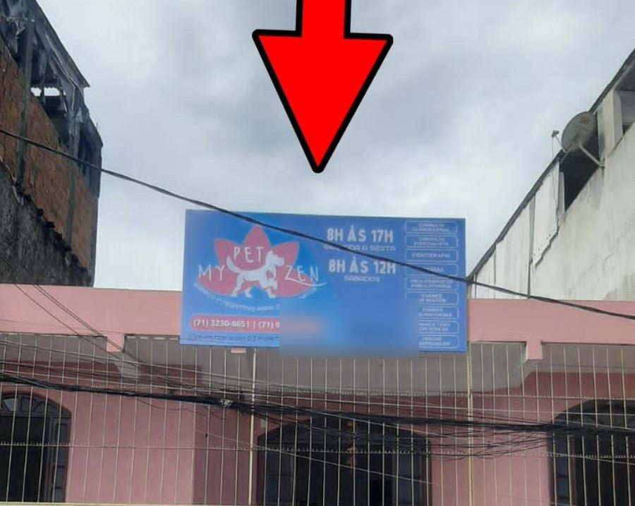
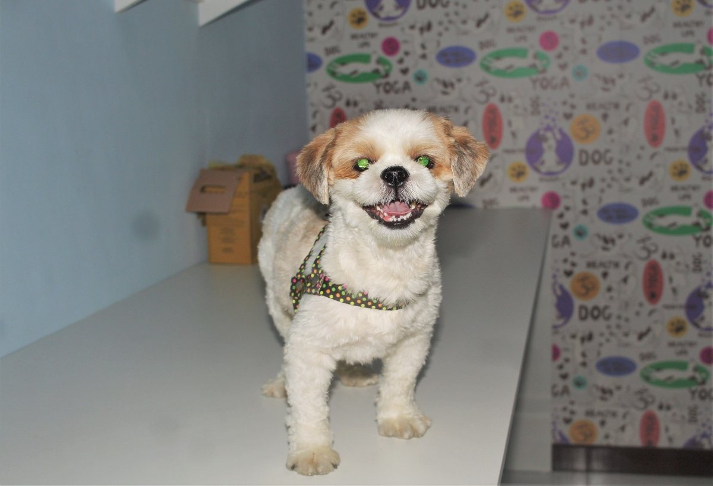
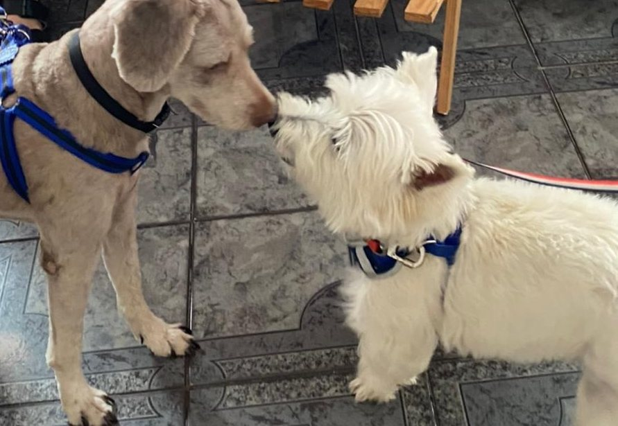

Início · O consultório
O consultório: na Silveira Martins, em Narandiba.
R. Silveira Martins, 1016, no Cabula. Atendimento com hora marcada, para cães e gatos. “o ambiente muito acolhedor”, escreveu um tutor no Google.
Onde
Endereço e como achar
- Endereço: R. Silveira Martins, 1016 · Narandiba (Cabula) · Salvador – BA · 41150-000.
- Na fachada: a placa azul da My Pet Zen, com a flor de lótus, fica no alto do prédio.
- WhatsApp: (71) 98739-0603.

Atendimento
Horário
Atendimento com hora marcada
Horário da ficha da My Pet Zen no Google, igual ao da placa da fachada (lido em 17/10/2026). Agende pelo WhatsApp e confirme dia e horário.
Por dentro
O espaço
Papel de parede com cães e gatos, mesa branca com tapete macio e um canto pensado para os gatos.


“Clinica linda, aconchegante, Zen mesmo.”Ana Paula, avaliação no Google · ver na ficha
Como agendar
Como agendar
- WhatsAppMande mensagem para (71) 98739-0603 com a espécie, a idade e o motivo.
- Hora marcadaCombine dia e horário.
- No diaGatos na caixa de transporte; cães na guia. Leve a carteira de vacinação.
A ficha do Google também lista banho e tosa e pet shop, como serviços complementares: confirme no WhatsApp como funcionam.
Rota
Mapa
Dúvidas frequentes
Perguntas comuns
Abre aos domingos?
Não. Segunda a sexta, das 8h às 17h; sábado, das 8h às 12h.
Preciso agendar?
Sim, o atendimento é com hora marcada, pelo WhatsApp da My Pet Zen.
Como acho a entrada?
Procure a placa azul da My Pet Zen no alto do prédio, no nº 1016. Na dúvida, mande mensagem ao chegar.
Com hora marcada
Agende o atendimento do seu cão ou do seu gato.
R. Silveira Martins, 1016, Narandiba (Cabula). Segunda a sexta, das 8h às 17h; sábado, das 8h às 12h. O agendamento é pelo WhatsApp (71) 98739-0603.